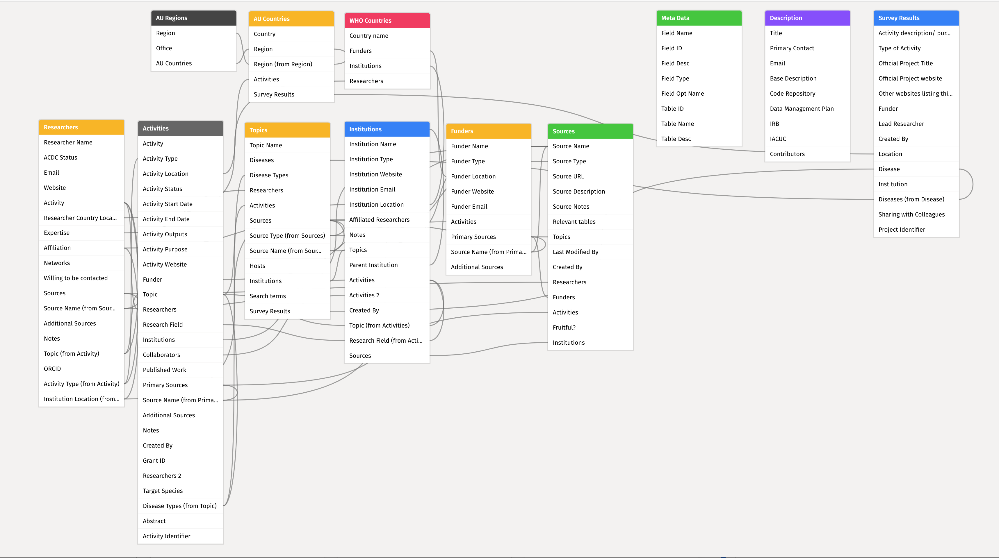

RIG Handbook
1
About
2
Introduction
3
Tools
3.1
Airtable
3.1.1
What is Airtable?
3.1.2
Key Terms
3.1.3
Security and Access Control
3.1.4
Data in Airtable
3.1.5
Views
3.1.6
Internal Backups: Record History, Base Snapshots
3.1.7
Importing data
3.2
Base Design
3.3
Automating Airtable
3.3.1
Automations with Drag and Drop Programing (pro and above)
3.3.2
Scripting and Blocks (pro plan and above)
3.4
Using the REST API
3.4.1
Scoped Tokens
3.4.2
Airtable and R
3.5
Data Management
3.5.1
Metadata
3.5.2
External Backups
3.6
R
4
Database
4.1
Data dictionary
5
Sources
5.1
UKRI
5.2
Wellcome Trust
5.3
National Insitutes of Health
5.4
National Science Foundation
5.5
Defense Advanced Research Projects Agency
5.6
ClinicalTrials.gov
5.7
GEPRIS
5.8
EDCTP
5.9
GLOPID-R
5.10
NRF South Africa
6
Updates
6.1
Wellcome Trust Grant Funding Data
6.1.1
General Information
6.1.2
How to update
6.2
ClinicalTrials.gov
6.2.1
How to update
6.3
Public journal/research databases
6.3.1
Example of a successful search:
6.3.2
Example of PubMed search for surveillance activities for Brucellosis:
6.3.3
Validation of results
6.3.4
Some relevant journals/databases:
6.4
GEPRIS
6.4.1
General Information:
6.4.2
How to Use:
6.4.3
Positive aspects of this source:
6.4.4
Downsides of this source:
6.5
EDCTP
6.5.1
General Information
6.5.2
How to use:
6.5.3
Benefits of this Source:
6.5.4
Shortcomings of this source:
7
Survey
References
@ EcoHealth Alliance 2023
Research Information Gateway Handbook
Chapter 4
Database
The current database is built using
Airtable
. The current database has the following schema:

4.1
Data dictionary